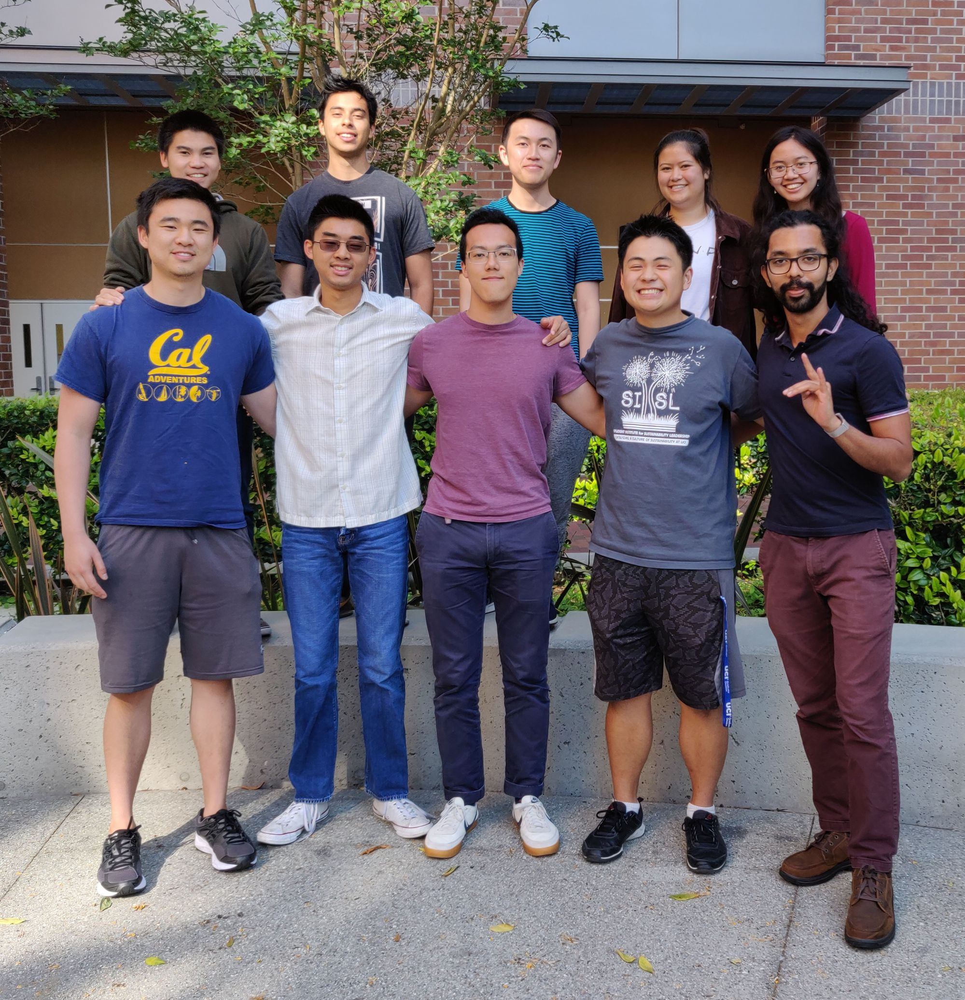

About Us
We are an independent group of undergraduate researchers, called the ZerO Waste Anteaters (ZOWA), who are passionate about technology-based zero waste management. We are recruiting volunteers who want to work on our zero waste project called ZotBins and make a difference for the environment. ZotBins is a smart waste bin system that collects data to help make waste management more efficient and to promote zero waste.
Subgroups
Web and Mobile
Our web and mobile engineers are dedicated to ensuring ZotBins is accessible to our end users. This team is responsible for building the ZotBins web and mobile app: the web app provides functionality to help facilities management in cultivating a sustainable campus, while the mobile app seeks to engage users in more environmentally-conscious practices. Members of this group are comfortable working on building an application end-to-end, and have experience with UI/UX design. Common tasks include designing aesthetically-pleasing user interfaces, web development, and mobile app development (Android and iOS).
Waste Recognition

Computer Vision researchers are responsible for developing and implementing the image recognition algorithms for our waste image dataset, including image classification and image localization. The algorithms are used in our ZotBins mobile app as well as the physical Smart Bins hardware. Our daily work may include waste image collections, data labeling, data preprocessing, and algorithms development & implementation.